Frontend Developer Portfolio
시니어 프론트엔드 개발자
About Me
IoT 솔루션 기업에서 B2B SaaS 플랫폼의 프론트엔드를 단독 구축하고 6년간 운영했습니다. 레거시 시스템의 현대화부터 크로스플랫폼 앱 개발까지, 비즈니스가 필요로 하는 기술적 판단을 내리고 실행해 왔습니다.
AngularJS → Next.js 점진적 마이그레이션으로 서비스 무중단 현대화
WebSocket 실시간 모니터링 + ECharts 데이터 시각화 시스템 설계
Flutter 크로스플랫폼 앱 단독 개발, 양대 앱스토어 배포
Frontend Core
State & Styling
Data Visualization
Mobile
Backend (Side Projects)
Tools & Infra
Career Path
2011
게임 개발자
C#, Unity
모바일 게임 개발
2015
전환기
전자회로, MCU
직업훈련학교
2016
레티그리드 입사
펌웨어 개발로 입사
프론트엔드로 전환
2018
EnergyWatch FE 리드
B2B SaaS 플랫폼
프론트엔드 전체 책임
2020
사이드 프로젝트
커뮤니티 서비스 개발
7개+ 프로젝트 운영
2023
Flutter 앱 출시
크로스플랫폼 앱
양대 마켓 배포
2024
새로운 도전
레티그리드 퇴사
다음 단계를 향해
EnergyWatch — Architecture
4년간의 AngularJS → Next.js 마이그레이션과 실시간 IoT 데이터 시각화 시스템 설계
Legacy Migration
문제: AngularJS 기반 레거시 시스템의 유지보수 한계와 신기능 개발 병목
판단: 전체 재작성 대신 가장 복잡한 데이터 분석 페이지를 우선 전환하여 핵심 컴포넌트와 아키텍처를 먼저 확보
변화: iframe + postMessage 기반 공존 아키텍처 구현. MUI 테마 통일, origin 검증 보안 체계, 동적 리사이징으로 끊김 없는 UX 확보
서비스 중단 없이 핵심 페이지부터 점진적 전환 성공. 신기술 도입의 안전한 경로를 확보
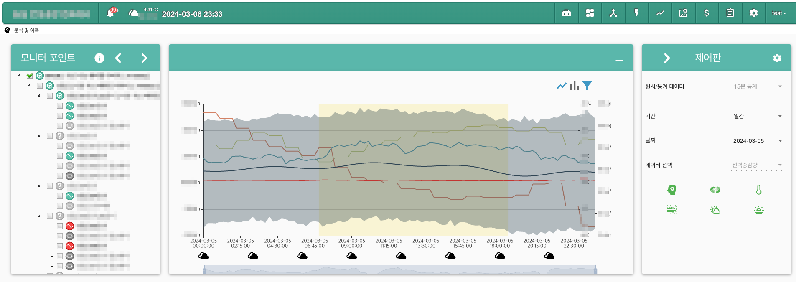
데이터 분석 페이지 — Next.js로 최초 전환된 핵심 페이지
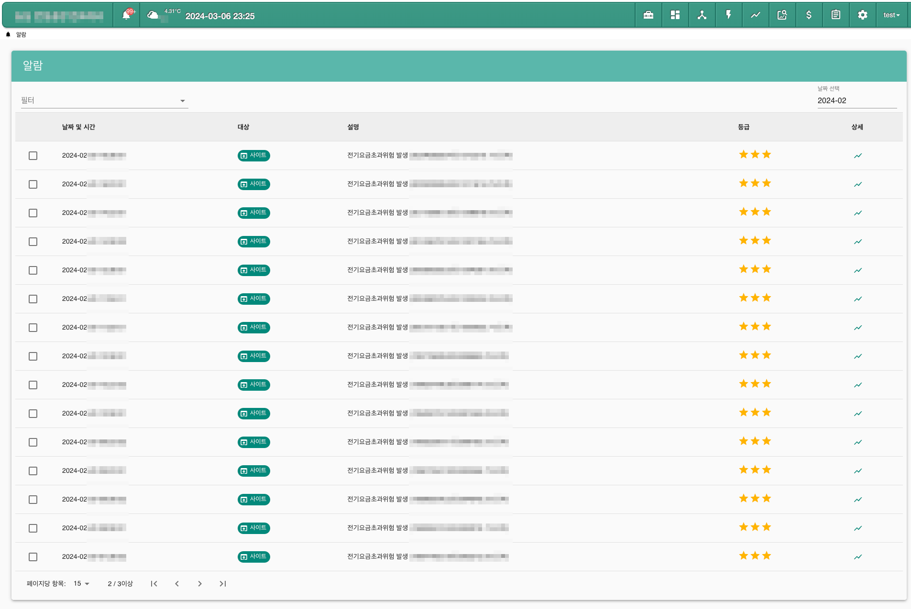
통합 대시보드 — AngularJS 프레임 내 iframe으로 연동
Real-Time Monitoring
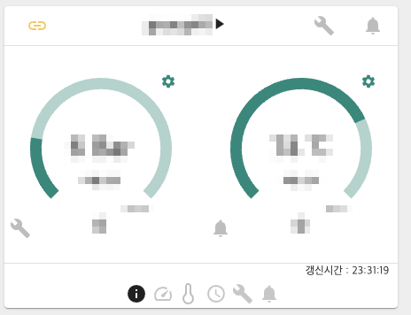
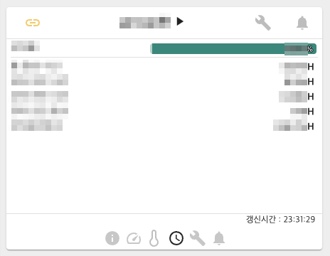
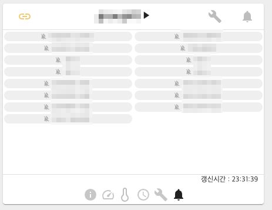
CMS 통합 모니터링 — WebSocket으로 실시간 상태 변화를 반영
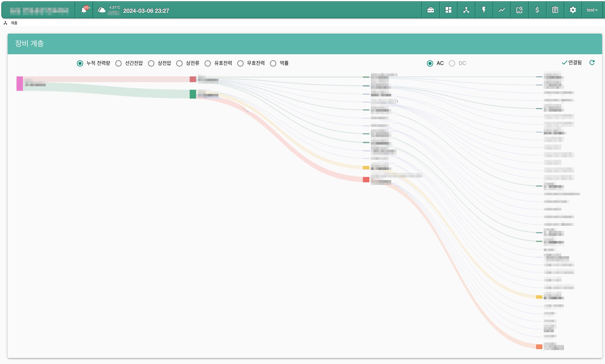
장비 계층 관리 페이지 — 사이트별 설비 구조를 트리 형태로 시각화
API 초기 로드 + WebSocket 전환
초기 데이터 표시용으로 API를 1회 호출한 뒤, 성공하면 WebSocket 통신을 시작하여 이후 실시간 데이터를 지속 수신하는 구조로 설계
ECharts 커스터마이징
전기 흐름의 동적 표현 등 공식 문서에 없는 요구사항을 속성 조합과 차트 레이어링으로 해결
재사용 차트 아키텍처
데이터 로딩, 에러 처리 등 공통 로직을 추상화한 컴포넌트로 수십 종류 차트의 개발 복잡도를 낮춤
Data Pipeline
대용량 시계열 최적화
사용자가 요청한 조회 기간을 내부적으로 분할, API를 병렬 호출하고 프론트엔드 캐싱 + 데이터 샘플링을 복합 적용하여 렌더링 성능 확보
TypeScript 타입 안전성
복잡한 시계열 데이터 변환 로직을 TypeScript 타입 시스템과 lodash로 안정적으로 처리. 수십 종류 차트에 필요한 데이터 구조를 타입으로 보장
고객사 맞춤 설정
요금제, 알림 기준치, 표시 데이터 등 각 기업 고객의 설비 환경에 맞춰 유연하게 변경 가능한 관리 시스템 구현
PDF 보고서 출력
월별/분기별 전력 사용 패턴, 요금 분석이 담긴 종합 보고서를 웹에서 PDF로 다운로드할 수 있는 출력 기능 제공
EnergyWatch — Expansion
Flutter 크로스플랫폼 앱 단독 개발과 프론트엔드 팀 빌딩
Cross-Platform Mobile
문제: PC 중심 웹 UI로는 현장 엔지니어의 모바일 접근성이 부재
판단: Flutter로 iOS/Android 동시 개발. 웹 UI를 그대로 옮기는 대신 모바일에 최적화된 UX 재설계
변화: Figma 프로토타입 도입으로 디자인→개발 프로세스 전환. 실시간 대시보드 + 데이터 요약 + 푸시 알림까지 모바일 핵심 기능 완성
양대 앱스토어 배포 완료. 인증서 관리부터 스토어 심사까지 배포 파이프라인 전과정을 독립 수행
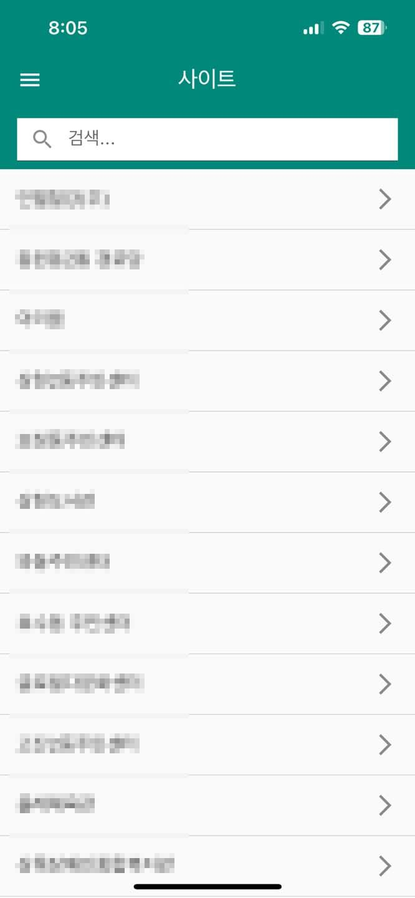
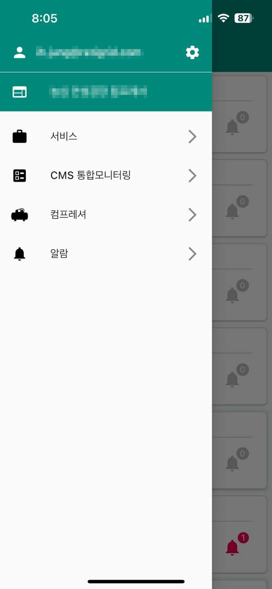
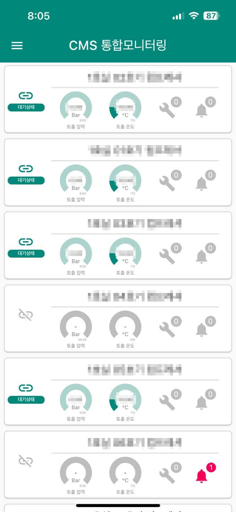
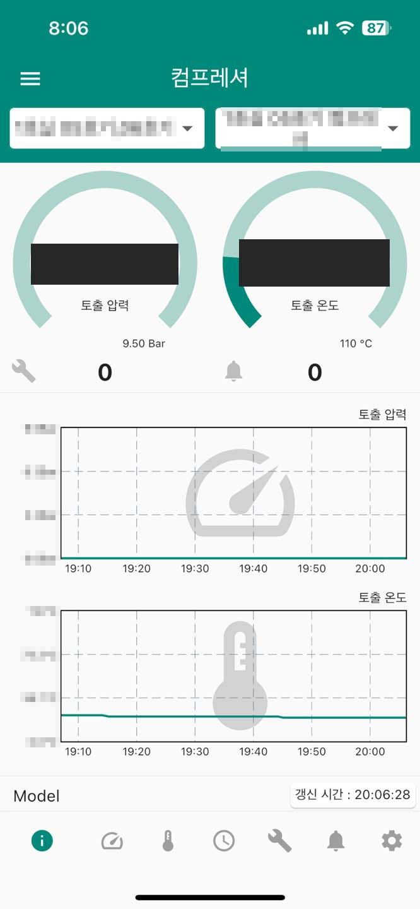
Soft Skills
약 4년간 B2B SaaS 플랫폼의 프론트엔드 전반을 1인으로 책임. 기술 스택 선정, 아키텍처 설계부터 전체 기능 개발, 배포, 운영까지 주도
~4
년간 FE 독립 운영
프론트엔드 팀 확장을 위한 채용 프로세스 참여. 코드 리뷰와 페어 프로그래밍으로 신규 개발자가 팀에 빠르게 적응하도록 이끔
CR
Code Review & Pair Programming
전담 디자이너 없이 사용자 친화적인 UI를 완성. 개발 도중 Figma를 독학하여 프로토타입→개발 프로세스를 스스로 도입하고 정착
Figma
독학 후 프로세스 도입
Side Projects
업무 밖에서도 문제를 발견하고, 코드로 해결하는 7개의 사이드 프로젝트
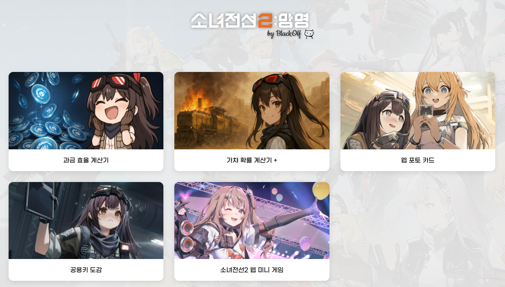
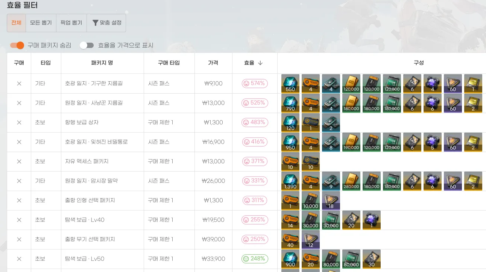
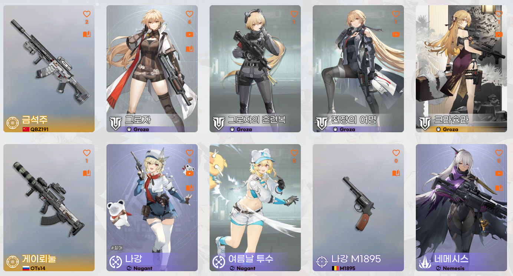
Community Platform — 운영 중
ISR + Google Sheets 아키텍처
Sheets API로 데이터를 가져와 페이지를 미리 생성, 변경 시 필요한 페이지만 재빌드하는 유연한 구조
가챠 확률 시뮬레이터
천장 시스템까지 반영한 확률 계산 + Motion 라이브러리 연출로 실제 소환 경험을 웹에서 재현
유료 패키지 가치 분석
인게임 가치를 자동 계산하고 효율순/가격순 정렬로 사용자에게 합리적인 소비 판단 도구 제공
풀스택 + API 문서화
NestJS + Swagger 연동으로 API 문서 자동화. Phaser 기반 미니게임, 서버 점수 검증까지
More Projects
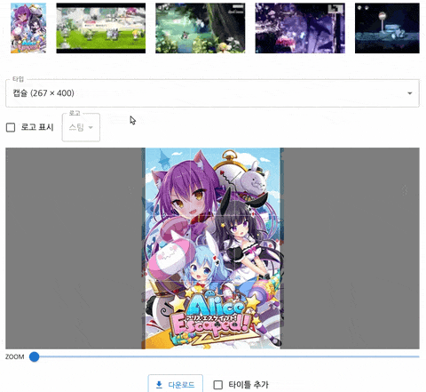
2024
Fabric.js로 Canvas를 직접 제어, GIF까지 편집 가능한 이미지 에디터. 클라이언트 사이드에서 모든 처리 완료
Next.js · Fabric.js
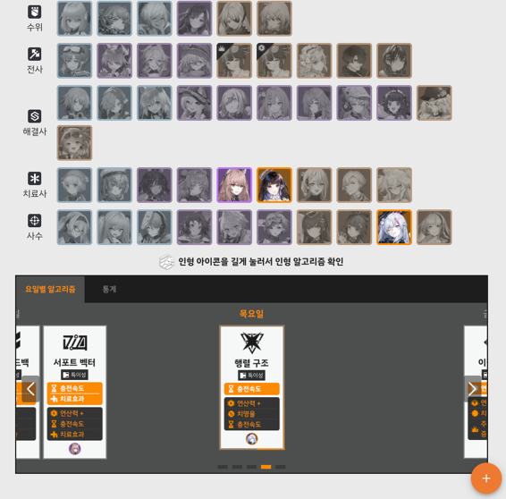
2023
요일별 아이템 획득 정보를 정리하고, 캐릭터별 필요 통계를 제공하여 효율적인 파밍 우선순위 결정을 지원
React · Recharts · TypeScript
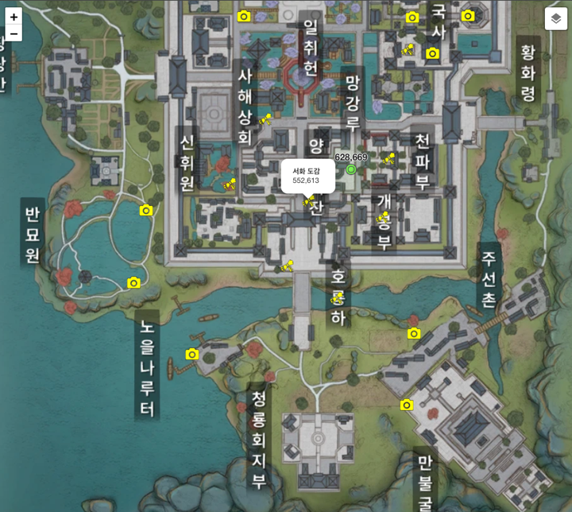
2022
Leaflet으로 게임 좌표 시스템을 웹에 구현. 카테고리별 마커 필터링으로 도감 위치를 효율적으로 탐색
React · Leaflet · TypeScript
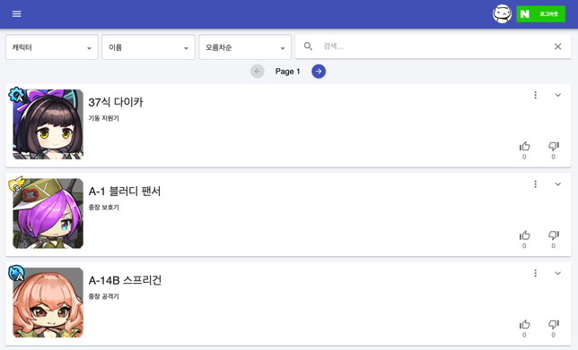
2020
GraphQL + Redis 캐싱으로 실시간 투표 집계. 세션 기반 중복 투표 방지와 빠른 응답속도 구현
Next.js · GraphQL · Redis
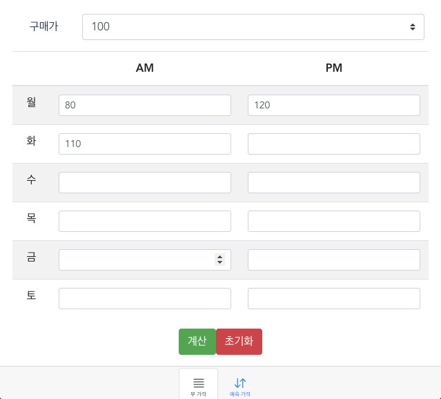
2020
알려진 가격 패턴 알고리즘 기반으로 해당 주의 무 가격 등락을 예측. Vue.js 첫 토이 프로젝트
Vue.js · JavaScript
박민우 — 시니어 프론트엔드 개발자
GitHub
github.com/pmw0310Portfolio
Notion Portfolio사용자의 문제를 발견하고, 코드로 해결합니다.